As shown above, it is natural form in the mathematical sense
that  ,
and 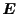 are in the left-hand side
and 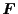, 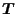 and
,
and 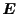 are in the left-hand side
and 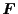, 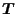 and  are in the right-hand side.
However, from physical point of view, especially for the rigid particles,
it is not always the case.
For instance, in the resistance problem,
are in the right-hand side.
However, from physical point of view, especially for the rigid particles,
it is not always the case.
For instance, in the resistance problem,
 and
are given and
and are unknown,
while in the mobility problem,
and are given and
and
are given and
and are unknown,
while in the mobility problem,
and are given and
 and
are unknown.
But from the rigidity of the particles,
is always a given parameter and
and
are unknown.
But from the rigidity of the particles,
is always a given parameter and
 is unknown.
That is, for the mobility problem, it would be the natural form that
is unknown.
That is, for the mobility problem, it would be the natural form that
| 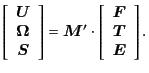 | (3.22) |
| 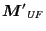 | 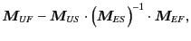 | (3.23) | |
| 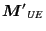 | 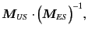 | (3.24) | |
| 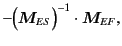 | (3.25) | ||
| 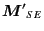 | 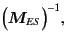 | (3.26) |
| 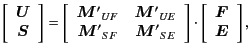 | (3.27) |
| 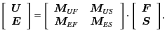 | (3.28) |
This procedure is exactly applied for the higher orders of expansions for rigid particles, because not only but the higher order velocity moments should be vanished (that is, these are always given parameters).